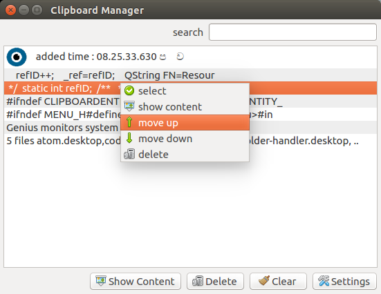

Genius
Genius is a powerful Lightweight clipboard manager
latest version : 1.0
Screen shots



Overview
Genius monitors system clipboard and saves its content. and it provides 2 basic interfaces to select items from the history Saved clipboard can be later copied and pasted directly into any application. Clipboard data saved into the history cannot change later. and Genius not change or edit data . clipboard data is restored without changing a single bit
Items can be:
- Paste directly into applications using Genius hot keys
- or simply removed.
Features
- simple user interface , easy to use
- Support for Linux, Windows and OSX ( still not compiled for OSX)
- Store text, HTML, images or any other custom formats
- Quickly browse and items in clipboard history
- System-wide customizable shortcuts
- Paste items using ItemSelector or historyMenu
- Many more features
Install and Run
To install Genius, use binary package or installer provided for your OS or follow instructions in
for build form source download source and open pro file using QT Creator or visual studio (QT plug in needed.) build and run
Dependencies
To build and run the application you'll need Qt library.
Keyboard Shortcuts (these shortcuts can be customized )
-
Ctrl+Alt+Shift+Cclear history and all data
-
Ctrl+Alt+Vpaste last item (not current content) of the history into current application
-
Ctrl+Shift+Xopen selector window (nice interface for use to navigate thought the history and select an item)
-
Ctrl+Alt+Shift+Mopen clipboard manager window
-
Ctrl+Shift+Vshow history menu (this can be use for select an item from history very easily )
-
Ctrl+Alt+Shift+Sopen settings window
Basic Usage
recommended to add Genius to startup application list. when clipboard is changed changed data is saved in the application's clipboard history. this data cannot edit lated only can delete when not needed. user can manage the Clipboard History using Clipboard Manager window. user can changed items positions , view content of the items, delete items, clear the history using this window.
user can select item form history using Selector window or history list.
Selector window is a fancy UI with nice animations. user can navigate through the clipboard history using left right keys when user release the Shift key or Alt key currently selected item will paste into the current application.default shortcut to bring this component is (Ctrl+Alt+X)
History menu is a basic menu contains items of the history. user can select item and press enter to paste item. in History menu , user can enable index numbers. if this option is enabled index of the item will show in front of the item user can select item by pressing index number (1-9)
user can turn off or on Genius any time. when turned off newly copied items will not add to the history. and all shortcuts will be disabled.
user can pause and resume Genius. if user want to use some items over and over again this is useful. when Genius is paused new items will not add to the history and. and when user select an item from the history history will not change shortcuts will work in this mode
user can view content of items .Genius can view HTML , URI lists, plain text, images. if the content cannot render row data is presented. user can export data as files.